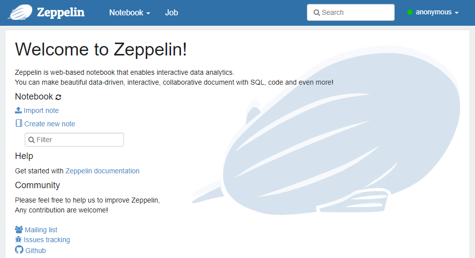
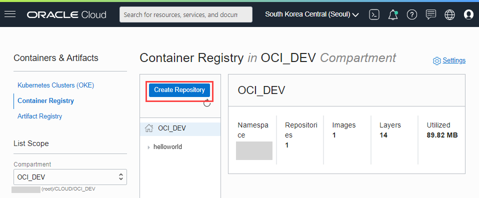
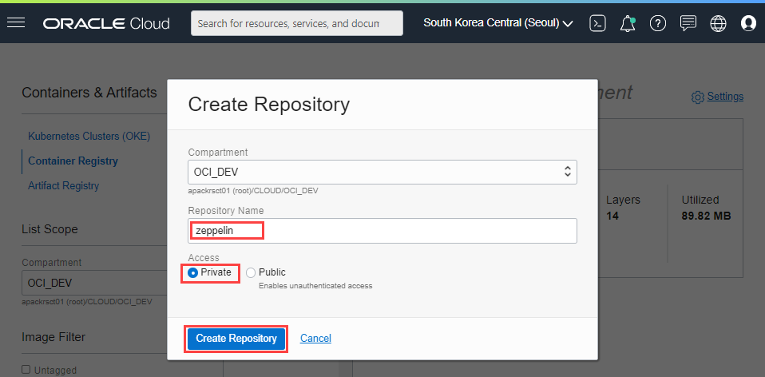
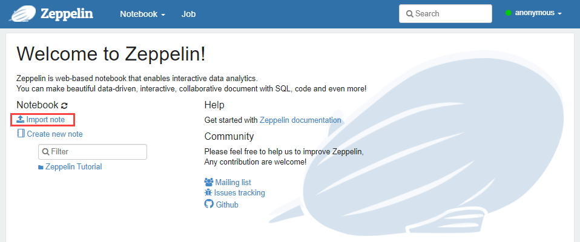
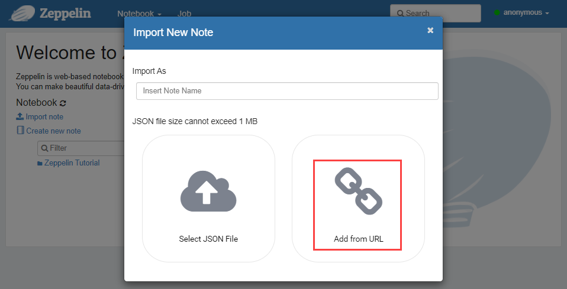
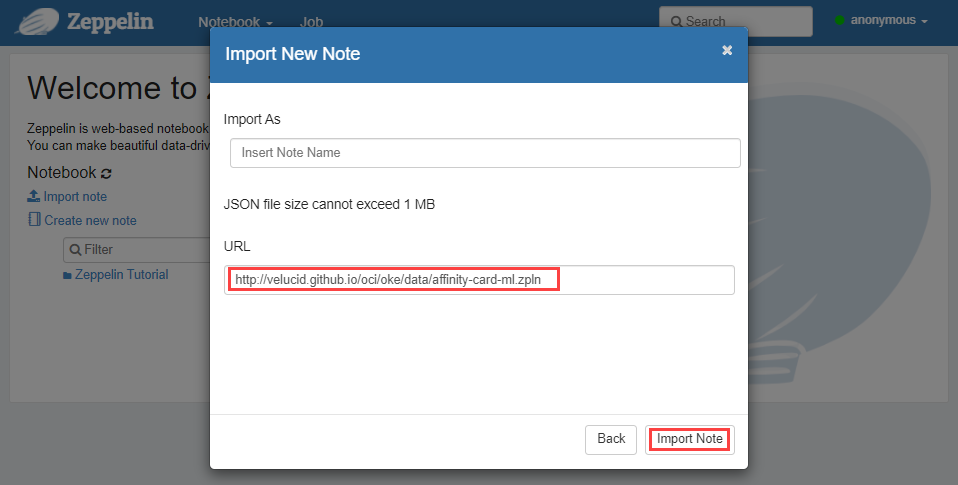
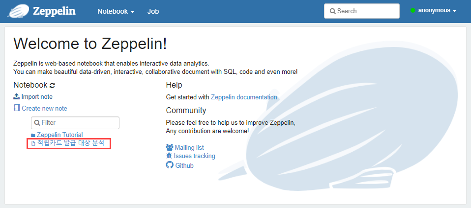
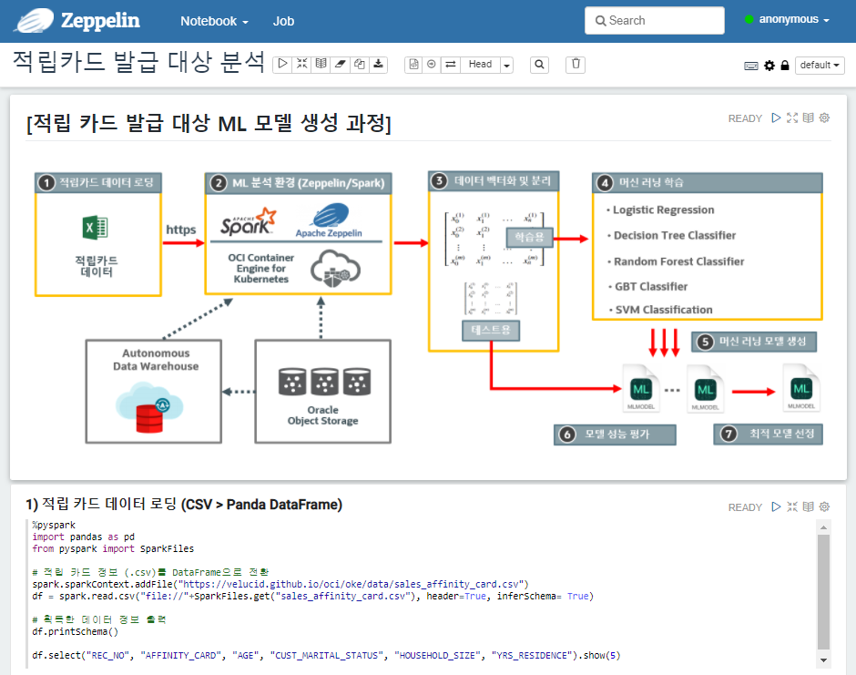

by Velucid ⏲ June 09, 2021
OCI OKE(Oracle Kubernetes Engine) 따라하기
OCI OKE 운영을 위한 기본 환경 구성
OCI OKE에 애플리케이션 배포하기
Docker에 Zeppelin과 Pyspark 환경을 구성하고 이를 OCI OKE Cluster에 배포하는 과정을 보여드립니다.
OCI Registry에 Docker Image를 등록하기 때문에, OCI Registry: Container Image 등록 및 안전한 배포 과정의 Docker Login과 K8S secret 생성을 사전에 완료해야 합니다.
Docker Image의 구성 목표는 Zeppelin UI를 기반으로 %pyspark 인터페이스를 사용하여 Spark-PySpark와 연동하고 ML 분석을 수행하는 것입니다.
Apache/Zeppelin 최신 릴리즈인 0.9.0은 Kubernetes Cluster 구성 환경이 너무 복잡하고 구성이 어려워서, 바로 이전 버전인 0.8.2를 사용하여 구성하였습니다.
본 예제에서 사용된 제품들의 버전은 다음과 같습니다.
Docker가 설치된 Bastion Server에서 수행합니다.
xxxxxxxxxx$ docker pull ubuntu:20.04xxxxxxxxxx$ docker imagesxxxxxxxxxxREPOSITORY TAG IMAGE ID CREATED SIZEubuntu 20.04 69040ea16df0 6 weeks ago 72.7MB
Docker Container 구동 (수행 위치 : bastion server as opc)
xxxxxxxxxx$ docker run -it --rm -p 80:8080 --name zeppelin-setup ubuntu:20.04 &Ubuntu OS에 Zeppelin과 Saprk-Pyspark 설치를 위한 기본 환경을 구성합니다.
xxxxxxxxxx$ docker psCONTAINER ID IMAGE COMMAND CREATED STATUS PORTS NAMESbc74f469ee54 ubuntu:20.04 "/bin/bash" 9 seconds ago Up 6 seconds 80->8080/tcp zeppelinxxxxxxxxxx$ docker exec -it bc74f469ee54 /bin/bashxxxxxxxxxxapt update -yapt install -y software-properties-common wget curl vim dos2unixadd-apt-repository -y ppa:deadsnakes/ppasoftware-properties-common 설치 도중, 혹시(?) 지역/타임존 입력을 요구하면 ASIA/Seoul로 설정
- Geographic area (ASIA) : 6
- Time zone(Seoul): 69
add-apt-repository 수행 로그에, 다음과 같이 deadsnales에 404 오류가 발생하면, Python3.7 설치가 불가능하므로, Ubuntu Image를 다른 버전으로 재수행해야 합니다. (저의 경우, 20.10에서 발생함)
xxxxxxxxxx...Err:5 http://ppa.launchpad.net/deadsnakes/ppa/ubuntu groovy Release404 Not Found [IP: 91.189.95.85 80]...
Ubuntu OS에 Zeppelin과 Pyspark 설치하는 과정을 보여드립니다. 설치 스크립트(install-zeppelin-pyspark-on-ubuntu.sh)는 Github에 업로드 되어 있으며, 이를 직접 다운 받아 설치 합니다.
xxxxxxxxxxcd /rootwget http://velucid.github.io/oci/oke/data/install-zeppelin-pyspark-on-ubuntu.shdos2unix install-zeppelin-pyspark-on-ubuntu.shbash -x install-zeppelin-pyspark-on-ubuntu.shxxxxxxxxxx# velucid 2021.06.08############################################ Install Open-JDK 8 ############################################apt update -yapt install -y openjdk-8-jdk############################################ Install Python 3.7 ############################################apt install -y python3.7apt install -y python3.7-venvpython3.7 -m venv /opt/pythonsource /opt/python/bin/activateapt install -y python3-pippython3.7 -m pip install --upgrade pippip --version############################################ Install Python Packages ############################################pip3 install ipython ipykernelpip3 install keras tensorflow matplotlibpip3 install scikit-learn pandas#pip3 install jupyter-client grpcio protobuf#pip3 install pyspark#pip3 install --upgrade ipython############################################ Install Spark 2.4.8 ############################################cd /optwget https://mirror.navercorp.com/apache/spark/spark-2.4.8/spark-2.4.8-bin-hadoop2.7.tgztar -xvf spark-2.4.8-bin-hadoop2.7.tgzmv spark-2.4.8-bin-hadoop2.7 sparkrm -f spark-2.4.8-bin-hadoop2.7.tgz############################################ Config Spark Environment ############################################cp /opt/spark/conf/spark-env.sh.template /opt/spark/conf/spark-env.shecho "" >> /opt/spark/conf/spark-env.shecho "export PYTHON_HOME=/opt/python" >> /opt/spark/conf/spark-env.shecho "export SPARK_HOME=/opt/spark" >> /opt/spark/conf/spark-env.shecho "export PATH=/opt/python/bin:/opt/spark/bin:\$PATH" >> /opt/spark/conf/spark-env.shecho "" >> /opt/spark/conf/spark-env.sh############################################ Install Zeppelin 0.8.2 ############################################cd /optwget https://mirror.navercorp.com/apache/zeppelin/zeppelin-0.8.2/zeppelin-0.8.2-bin-all.tgz tar -xvf zeppelin-0.8.2-bin-all.tgz mv zeppelin-0.8.2-bin-all zeppelinrm -f zeppelin-0.8.2-bin-all.tgz ############################################ Config Zeppelin Environment ############################################cp /opt/zeppelin/conf/zeppelin-env.sh.template /opt/zeppelin/conf/zeppelin-env.shecho "" >> /opt/zeppelin/conf/zeppelin-env.shecho "export PYTHON_HOME=/opt/python" >> /opt/zeppelin/conf/zeppelin-env.shecho "export SPARK_HOME=/opt/spark" >> /opt/zeppelin/conf/zeppelin-env.shecho "export PYSPARK_PYTHON=/opt/python/bin/python" >> /opt/zeppelin/conf/zeppelin-env.shecho "export PYSPARK_DRIVER_PYTHON=/opt/python/bin/python" >> /opt/zeppelin/conf/zeppelin-env.shecho "export ZEPPELIN_ADDR=0.0.0.0" >> /opt/zeppelin/conf/zeppelin-env.shecho "export PATH=/opt/python/bin:/opt/zeppelin/bin:\$PATH" >> /opt/zeppelin/conf/zeppelin-env.shecho "" >> /opt/zeppelin/conf/zeppelin-env.sh############################################ Setup Bash Environment ############################################echo "export PYTHON_HOME=/opt/python" >> ~/.bashrcecho "export SPARK_HOME=/opt/spark" >> ~/.bashrcecho "export ZEPPELIN_HOME=/opt/zeppelin" >> ~/.bashrcecho "export PATH=\$PYTHON_HOME/bin:\$ZEPPELIN_HOME/bin:\$SPARK_HOME/bin:\$PATH" >> ~/.bashrcecho "" >> ~/.bashrcxxxxxxxxxx# ls -al /opt/python/bin | grep 3.7-rwxr-xr-x. 1 root root 239 Jun 8 23:16 easy_install-3.7-rwxr-xr-x. 1 root root 225 Jun 8 23:18 f2py3.7-rwxr-xr-x. 1 root root 230 Jun 8 23:17 pip3.7lrwxrwxrwx. 1 root root 9 Jun 8 23:16 python -> python3.7lrwxrwxrwx. 1 root root 9 Jun 8 23:16 python3 -> python3.7lrwxrwxrwx. 1 root root 18 Jun 8 23:16 python3.7 -> /usr/bin/python3.7# /opt/python/bin/python --versionPython 3.7.10# /opt/python/bin/pip --versionpip 21.1.2 from /opt/python/lib/python3.7/site-packages/pip (python 3.7)
xxxxxxxxxxcat web-ingress.jsonxxxxxxxxxx[ { "source": "0.0.0.0/0", "protocol": "6", "tcpOptions": { "destinationPortRange": { "max": 80, "min": 80 } }, "isStateless": "false", "Description": "Web Access" }, { "source": "0.0.0.0/0", "protocol": "6", "tcpOptions": { "destinationPortRange": { "max": 22, "min": 22 } }, "isStateless": "false", "Description": "SSH Access" }]xxxxxxxxxx$ oci network security-list update --security-list-id ocid1.securitylist.oc1.ap-seoul-1.aaaaaaaa*****rbq --ingress-security-rules file://./web-ingress.json --force{ "data": { "compartment-id": "ocid1.compartment.oc1..aaaaaaaa*******wdwq", "defined-tags": {}, "display-name": "k8s-bastion-seclist", "egress-security-rules": [ { "description": "HTTS (OCI API)", "destination": "0.0.0.0/0",...xxxxxxxxxx/opt/zeppelin/bin/zeppelin-daemon.sh startApache/Zeppelin 구동 (수행 위치 : web browser)

Docker Container의 변경된 내용을 commit하여 신규 이미지로 생성합니다.
xxxxxxxxxx$ docker psCONTAINER ID IMAGE COMMAND CREATED STATUS PORTS NAMESbc74f469ee54 ubuntu:20.04 "/bin/bash" 2 hours ago Up 2 hours 80->8080/tcp zeppelinxxxxxxxxxx$ docker commit bc74f469ee54 zeppelin:0.8.2xxxxxxxxxx$ docker imagesREPOSITORY TAG IMAGE ID CREATED SIZEubuntu 20.04 69040ea16df0 6 weeks ago 72.7MBzeppelin 0.8.2 899e164bf639 31 seconds ago 4.47GBZeppling/PySpark 이미지를 OCI Repository에 등록하는 과정을 보여드립니다.
OCI Console을 통해 "zeppelin"라는 이름으로 OCI Repository를 생성합니다.

Repository 생성

Zeppelin 이미지를 OCI Repository로 업로드합니다. (수행 위치 : bastion server as opc)
스크립트 내의 <tenancy> 는 현재 실습을 수행하고 있는 OCI tenancy 이름으로 변경해야 합니다.
xxxxxxxxxx$ docker tag zeppelin:0.8.2 icn.ocir.io/<tenency>/zeppelin:0.8.2OCIR image name 규칙: <region>.ocir.io/<namespace>/<image name>/<tag>
- <namespace> = <tenancy name>
- <image name> = <ocir repository name>
xxxxxxxxxx$ docker imagesREPOSITORY TAG IMAGE ID CREATED SIZEubuntu 20.04 69040ea16df0 6 weeks ago 72.7MBzeppelin 0.8.2 899e164bf639 5 minutes ago 4.47GBicn.ocir.io/**/zeppelin 0.8.2 899e164bf639 5 minutes ago 4.47GBxxxxxxxxxx$ docker push icn.ocir.io/<tenancy>/zeppelin:0.8.2The push refers to repository [icn.ocir.io/<tenancy>/zeppelin]162be6d5e374: Pushing [======> ] 530.1MB/4.4GB3ddefbdbdfbe: Pushed5a6ab33e4b09: Pushedf99824acacbf: PushedOCI Repository에 업로드된 Zeppelin 이미지를 OCI OKE Cluster로 배포합니다.
xxxxxxxxxx$ cat deploy-zeppelin.yamlxxxxxxxxxxkindDeploymentmetadata namezeppelin labels appzeppelinspec selector matchLabels appzeppelin replicas1 template metadata labels appzeppelin spec containersnamezeppelin imageicn.ocir.io/apackrsct01/zeppelin0.8.2 command"/bin/bash" "-c" "/opt/zeppelin/bin/zeppelin.sh" portscontainerPort8080 envnameZEPPELIN_ADDR value0.0.0.0 imagePullSecretsnameocir-icn-secretxxxxxxxxxx$ kubectl create -f deploy-zeppelin.yamlxxxxxxxxxx$ kubectl get pods -l app=zeppelinNAME READY STATUS RESTARTS AGEzeppelin-55846bc849-zh9c2 1/1 Running 0 3m26sZeppelin을 외부 인터넷으로 접속하기 위한 Load Balancer Service를 생성 합니다.
xxxxxxxxxx$ cat service-zeppelin.yamlxxxxxxxxxxapiVersionv1kindServicemetadata nameapache-zeppelin-lb labels appapache-zeppelinspec typeLoadBalancer portsport80 protocolTCP targetPort8080 selector appapache-zeppelinxxxxxxxxxx$ kubectl create -f service-zeppelin.yamlxxxxxxxxxx$ kubectl get services -l app=zeppelinNAME TYPE CLUSTER-IP EXTERNAL-IP PORT(S) AGEzeppelin-lb LoadBalancer 10.96.243.190 146.**.***.223 80:32371/TCP 2m10sZeppelin/Pyspark를 이용하여 "적립 카드 발급 대상 분석" 예제를 Import 합니다.
Zeppelin 접속


Notebook URL 입력 및 Import


순차적으로 "Play" 버튼을 클릭하여 ML 분석 과정 수행

Zeppelin 이미지로의 직접 접속 방법
xxxxxxxxxx$ kubectl get pods -l app=zeppelinNAME READY STATUS RESTARTS AGEzeppelin-55846bc849-zh9c2 1/1 Running 0 21mxxxxxxxxxx$ kubectl exec -it zeppelin-55846bc849-zh9c2 -- /bin/bashxxxxxxxxxxroot@zeppelin:/# curl localhost:8080<!doctype html><!--Licensed under the Apache License, Version 2.0 (the "License");you may not use this file except in compliance with the License.You may obtain a copy of the License at...